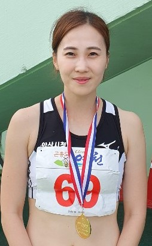
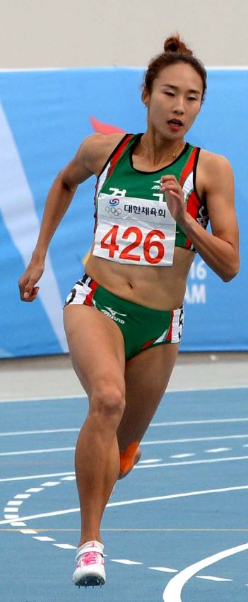

신수지(申秀智, 본래 1991년 1월 8일 음력 1990년 12월 ~ ) (30세)는 대한민국의 현직 프로 볼링 선수이자, 前 리듬 체조 선수이다. 서울세종고등학교에 재학 중이던 2007년, 그리스에서 열린 세계 리듬 체조 선수권 대회에서 17위에 오르면서 상위 20위까지 주어지는 올림픽 출전권을 획득하여 베이징 올림픽에 출전하였다. 개최국 자격으로 자동 출전한 중국 선수들을 빼면 베이징 올림픽에 자력 출전권을 갖고 출전한 유일한 동양 선수였다.[1] 또한 아시아 선수로서는 최초로 자력으로 올림픽에 진출한 선수가 되었으며, 대한민국 리듬 체조 선수로서는 바르셀로나 올림픽 이후 16년 만에 올림픽에 참가하는 선수가 되었다. 예선에서 합계 66.150점으로 12위에 랭크되어 10위까지 주어지는 결선 진출에는 실패했지만, 런던 올림픽에서 손연재가 결선에 진출하여 최종 5위를 기록하기 전까지 역대 대한민국 리듬 체조 선수 가운데 최고 성적을 냈다.[2] 2007년 세계 리듬 체조 선수권 대회에서는 고난이도 기술인 백 일루션(한쪽 다리를 머리로 올린 뒤, 수직으로 원을 그리는 기술)을 세계 최초로 9회 연속 성공해 내기도 하였다. 전담 코치는 김지희 국가대표팀 코치이고, 세마스포츠마케팅이 매니지먼트를 맡고 있으며 르꼬끄 스포르티브에서 공식후원, 자생한방병원에서 후원 및 의료 전담 팀을 지원하고 있다. 그러나 계속된 부상으로 국제 대회에서 뛰어난 성적을 거두기 어려웠고, 리듬 체조 국가대표 에이스 자리를 세종고등학교 후배인 손연재에게 내주었다. 현역 선수로 마지막으로 출전한 무대였던 2011년 10월 10일 김포실내체육관에서 있었던 전국체전 리듬 체조 경기에서 판정의 불공정성에 대해 경기 후 자신의 트위터에 문제를 제기하여 크게 논란을 일으켰고,[3] 이 사건으로 경고성 근신 처분을 받았다.[4] 이후 발목 부상이 악화되었고, 무릎 부상까지 겹쳐 2012년 1월 초 런던 올림픽 출전권이 부여되는 프레올림픽에 불참[5]한 후 소리소문없이 현역 은퇴를 선언하며 선수 생활을 마감했다. 나중에 본인이 밝힌 바로는, 발목 인대 파열로 인해 은퇴를 결심했다고 한다.[6] 현역 은퇴 후 세종대학교를 졸업하고 동 대학원에 입학해 체육학과 석사 과정에 들어갔다.[7] MBC의 댄싱 위드 더 스타 시즌 2에 출연하여 중간에 탈락했지만 강한 인상을 남겼고, 런던 올림픽에서 손연재가 출전하였을 때 보조 해설위원으로 마이크를 잡으며 리듬 체조 해설위원으로 데뷔했다. 2014년 아시안 게임에도 해설위원을 맡았다. 2015년부터는 볼링선수로 활동하고 있다.
 오수경은 100m 대표 스프린터이다.

시흥시청의 이민정이 제72회 전국육상선수권대회 여자 200m에서 우승, 시즌 2관왕을 질주했다.
이민정은 지난달 29일 강원도 정선종합운동장에서 막을 내린 대회 여자 200m 결승에서 24초38을 기록,
지난해 우승자인 손경미(양평군청ㆍ24초83)와 오수경(안산시청ㆍ25초08)을 제치고 1위로 골인했다.
이로써 이민정은 대회 첫 날 100m에서 2위에 머문 아쉬움을 털어내며 올 시즌 전국실업육상대회(4월) 우승에 이어
200m에서 시즌 두 번째 금메달을 목에 걸었다.